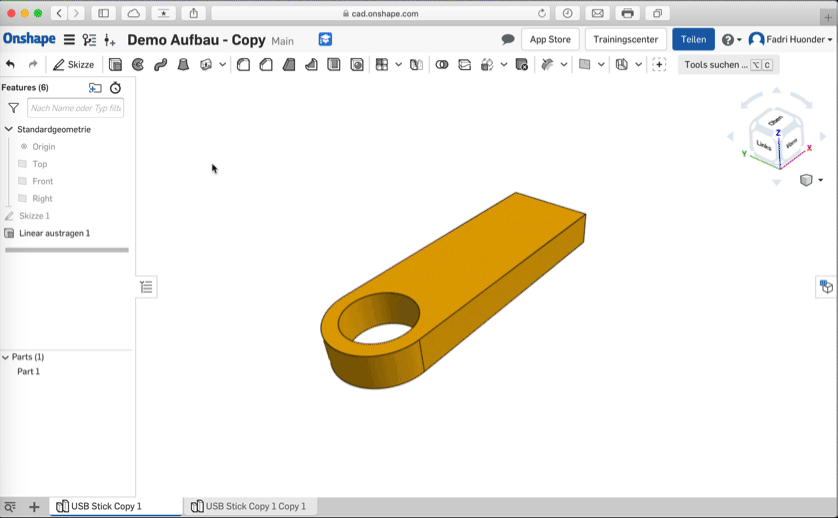
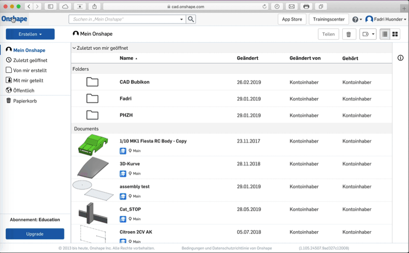
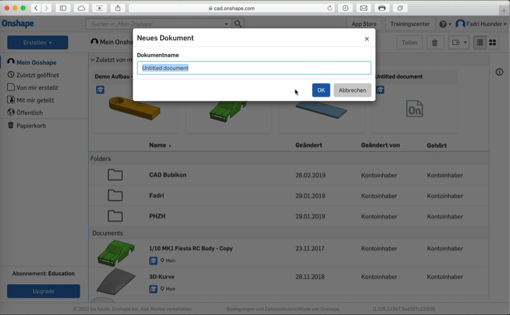

1. Klicke in der oberen linken Ecke auf den OnShape-Schriftzug. Du gelangst so zu der Startseite "Mein OnShape".
2. Klicke auf den "Erstellen"-Knopf und wähle aus dem heruntergeklappten Menü die Option "Neues Dokument" aus.
3. Tippe den Namen deines neuen Dokumentes ein und klicke danach auf den "OK"-Knopf.
4. Fertig! Du hast jetzt ein neues Dokument erstellt und kannst beginnen, darin zu zeichnen.